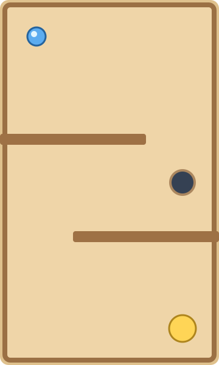

ИНВЕНТАРИЗАЦИЯ ИГРОВОГО КОНТЕНТА
Всё, что есть
в OzonGame.
Игры, целевые материалы, задания и покупки. С наградами, валютами, условиями и фактическим местом подключения.

Первый уровеньТот самый лабиринт с наклоном телефона
«Наклонный лабиринт»: шарик катится по карте от наклона устройства. 25 уровней, 5 локаций, калибровка датчиков и запасное управление пальцем.
В мобильной галерее он открывается через слот «Зума». В основной обёртке обнаружено отличие в ключе запуска — это отдельно отмечено в аудите.
Что обнаружено при аудите
ЕДИНЫЙ РЕЕСТР
Каталог контента
Как читать суммы: «Награда» — получаем валюту, «Покупка» — тратим. «От» означает стартовую цену без улучшений или минимальный пример. Значение «по результату» зависит от партии и дохода; это не фиксированная выплата.
| Контент | Раздел | Устройство | Награда / расход | Сумма | Подключение | Условия |
|---|
Что именно проверено
Живые справочники
Игры, квесты, задания, цели, улучшения и награды действующей тестовой версии. Аккаунты и прогресс игроков не выгружались.
Текущий клиент
Реестр игровых компонентов, мобильные ветки, магазин, кот, город, персонал, завод и правила экономики. Контент вне основного меню сохранён в списке.
Границы проверки
Это аудит наличия и подключения, а не результат полного прохождения. Реальные датчики на физических iOS/Android в этом прогоне не проверялись.
Номера аптек обозначают игровые наборы контента. Меню текущей DEV-версии и старые серверные наборы могут различаться. Карточки показывают это явно. Аудит — статический снимок; страница не начисляет награды и не меняет игру.
Скачать все строки для работы в Excel →